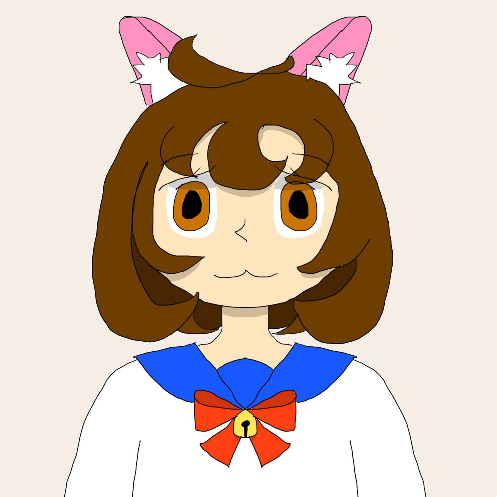

San Francisco
San Francisco is a shipgirl of the Continental Union with brown eyes and hair. The hair has shoulder-length and very voluminous, curling inward towards her cheeks.
Normally, she wears a simple dark swimsuit underneath with a blue seifuku and a red bow, which also has a small golden bell on top of it. Additionally, she has a set of fake pink catears with a white inlet and a similar fake pink tail.
She is a weeb who has never been to Ajisai and, as a result, thinks it is exactly like the anime she watches. However, she has met Kaga before and has a crush on her.
| Country | Continental Union |
|---|---|
| Height | NaN | NaN |
| Birthday | 3 October |
| Type | Submarine |
In Game
Not Done
Relationships
Kaga-san
She has a crush on Kaga and originally called her Kaga-chan, until she was asked to stop, but does not show it or tell anyone.
Haguro-chan
After first meeting Haguro she immediately tried to pet her catears, a goal which she still has to fulfill. Much to Haguro's dismay.
Trivia
- Her real life counterpart is the American nuclear-powered multipurpose fast attack submarine USS San Francisco (SSN-810)open_in_new.
Gallery
-

Reveal Image